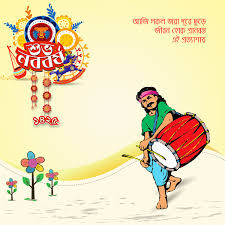
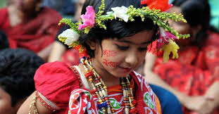
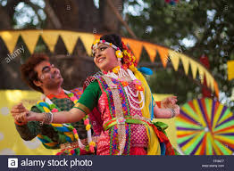
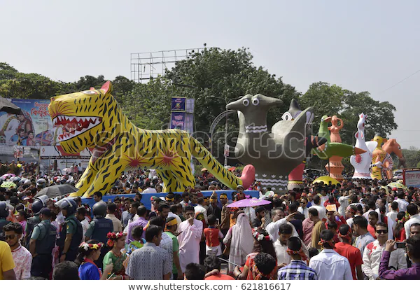
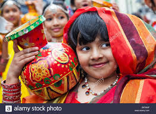
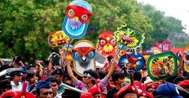
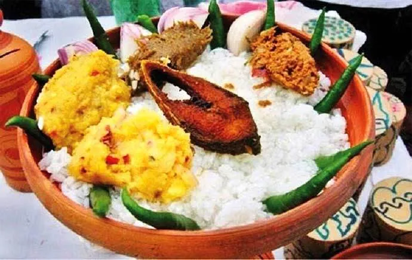
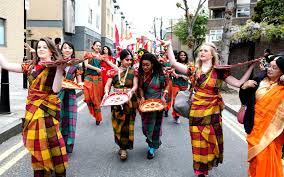
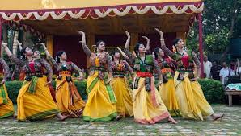
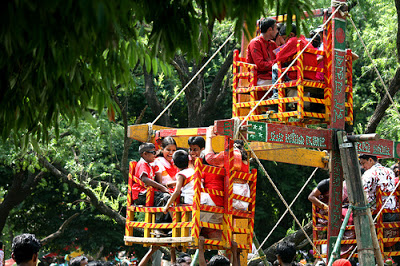

The first day of Bangla year is celebrated as Pahela Boishakh. The day is celebrated with festivity across the country. It is celebrated in villages and towns. People in the village celebrate this day according to their age-old customs. Special meals are arranged at home. Baisakhi melas are held in different places. In towns, various socio-cultural organizations arrange interesting programs on this day. At Ramna Batamul, it is celebrated gorgeously. Many urban people wake up early in the morning and go to the function to enjoy poem reciting, songs, stage drama, lecture, etc. Many people eat panta hilisa in the morning. Children put on colorful dresses. They go to the Boishakhi Mela and buy sweets, toys, dolls, and handmade things. They enjoy the day with great pleasure. Shopkeepers in: both villages and towns open Halkhata. They distribute sweets among their customers and clients.
  
There are some remarkable days in our national life. These days come to our life with the message of immense pleasure and traditional festivities. Pahela Baishakh is the first day of Bangla New Year. It is, no doubt, apart, and parcel of Bangladeshi culture. It expresses the happy moments of our life. The day is celebrated with traditional festivities throughout the country. Traditionally traders and shop-keepers are found to open halkhata. They offer sweets to their customers and clients. Different organizations and institutions chalk out elaborate programs to celebrate the day. The day’s first programme begins at dawn in Ramna Batamul. Chhayanat organizes the program after the sunrise. Men, women, and children participate in the program putting on traditional dresses like saree, pajama, and Panjabi. This program is telecast live from 6 in the morning by Bangladesh-Television.
   
On this day national dailies bring out special supplements. Bangladesh Television and Bangladesh Radio also broadcast many special programs all day long. Especially students and teachers of the Institution of Fine Arts (IFA) of Dhaka University bring out a colorful procession carrying festoons, placards, posters, banners and wearing masks from the Institute premises at 9.30 a.m. to welcome the Bangla New Year. Pahela Baishakh FestoonPahela Baishakh Festoon Bangla Academy, Shilpakala Academy, Jatiya Press Club, Bulbul Lalitkala Academy, Liberation War Museum and Bangladesh National Museum and other cultural organizations also arrange different programs on the occasion. People of all ages enjoy the day very much. As the Pahela Baishakh is one of the important cultures of the Bangalees, it is really a glorious day for them. The day signifies a new dimension of a new life for all people of our Bangladesh.
  